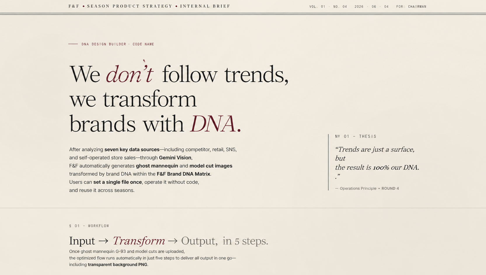
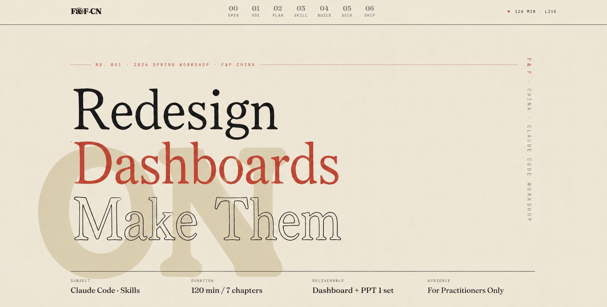

Build Your Own Dashboard
From data to dashboard to executive reporting in one workflow.
First-time users will leave with one working dashboard and one auto-generated PowerPoint report.
A 120-minute journey across 7 chapters
We will move through one consistent workflow: receive the data, structure the plan, build the interface, and package the result as a business report.
Use the first 10 minutes to remove blockers before hands-on work begins.
Most first-time issues come from environment setup, not from the actual workflow. We will resolve those early.
Initial Readiness Check
Before the workshop starts, confirm that every participant has the same baseline setup. If anything fails, the instructor team will provide one-on-one support.
- Can
clauderun successfully from the terminal? - Is
/plugin marketplace add obra/superpowers-marketplacerecognized? - Has
sample_data.xlsxbeen downloaded?
Session Deliverables
By the end of the workshop, each participant should have two practical outputs: one personal dashboard and one auto-generated PowerPoint report.
Start with the output.
Keep the concepts concise.
F&F Korea Use Cases
Report-generation workflow automation is already being used in Korea to create and share HTML-based business reports.
CEO reporting · PPT to HTML
Case 1. Global Marketing report material
KARINA EDITION VOL.2 — UNIFIED DASHBOARDCase 2. FnCo Influencer Dashboard CEO Report
FnCo IF — CEO REPORTClaude Code Extension Mechanisms
Claude Code is supported by five operating mechanisms. Knowing the basics is enough to produce a useful business report today; our main focus is mastering Skills.
| Mechanism | Business explanation | Today |
|---|---|---|
| Skills | Markdown instructions that make Claude better at a specific task | Primary use |
| Plugins | Installable packages that bundle skills and tools | Setup use |
| Memory | Persistent notes Claude can reference across sessions | Concept only |
| MCP | Connections to external data and tools such as DBs, Slack, and Figma | Concept only |
| Hooks | Automated triggers before or after work steps | Concept only |
Before execution, a five-minute plan determines the quality of the full deliverable.
A clear plan improves the final dashboard, report structure, and visual consistency.
Five-Step PLAN Worksheet
Fill in these five fields before asking Claude to build anything.
1. Objective Who will use this, when, and for what decision? Example: Marketing team reviews channel ROI every Monday. 2. Data What data: sales, marketing, inventory, VOC, knowledge graph. Source: Excel, Tmall API, Douyin API, JD, internal ERP. Format: CSV, Excel, JSON. 3. Screen Sketch 3-5 core metrics for one screen. Candidate chart types: bar, line, map, heatmap. 4. Report Format PPT, HTML, or Excel. Identify the target audience. 5. Deployment Local file only, internal URL, or team distribution.
How to plan: Plan Mode
Use Plan Mode without any additional installation
After installing Claude Code through the VS Code extension, press Shift + Tab twice to enter Plan Mode. You can also type /plan in the chat.
In Plan Mode, Claude shows the plan first and does not write code until you approve it. This is the safest operating mode for new users.
Recommended scenario:
follow this path for hands-on work.
Use sample_data.xlsx. With Plan Mode on, we will complete one PLAN worksheet together.
Tmall / Douyin
Weekly Sales
Review sales performance by channel and category
sample_data.xlsx- Week-over-week growth rate
- Top 10 products by sales
- Category × channel heatmap
Sample Prompt — Start with Plan Mode
Turn on Plan Mode, paste the prompt below, and let Claude show the proposed design plan before writing code.
Start in Plan Mode. Analyze sample_data.xlsx and create a design plan for a weekly sales dashboard that helps the team review channel ROI every Monday. Include: - 3-5 core metrics, including weekly sales by channel, week-over-week growth, top 10 products by sales, and a category × channel heatmap. - Candidate chart types: bar, line, and heatmap. - Style direction: minimal and business-ready; avoid generic AI dashboard styling. - Data flow: read XLSX, transform data, then visualize. - Screen layout sketch with top, middle, and bottom sections. After I review the plan and say OK, proceed with dashboard implementation.
The 5 core features of Claude Code,
explained in plain terms.
These terms can feel confusing at first. Here is a short guide with analogies and examples.

A "how to do this kind of task" manual
A checklist you write for Claude so it follows a specific rule whenever a certain type of task comes up. Turn it on and Claude automatically applies that expertise.
Example: enabling the frontend-design skill makes Claude apply rules to produce designs that do not look AI-generated.
Used directly today: frontend-design · pptx · xlsx

Bundle skills and tools, install once
A package that groups several skills and commands together. Like a VS Code extension or a mobile app — install once and the tools inside are ready to use.
Example: installing the superpowers plugin adds brainstorming, writing-plans, and other skills at the same time.
Used directly today: /plugin install to set up the workshop environment

A notepad Claude remembers across chats
Whatever you teach Claude once is remembered in the next conversation. It is saved to a MEMORY.md file you can manage per project.
Example: write "our brand tone is minimal" once, and Claude will keep that tone in future sessions without being reminded.
Concept only today: useful for repeating and automated workflows in the next phase

Auto-start and auto-finish triggers
Pre-registered actions that Claude runs before or after a specific event. Once configured, they execute automatically without further attention.
Example: auto-lint every time a file is saved, or auto-refresh the weekly report every Monday morning.
Concept only today: the engine behind "just swap the data next week and the report rebuilds itself"

A USB port that connects Claude to company systems
A standard protocol that connects Claude to external systems (Notion, Slack, databases, Figma, etc.). Once connected, Claude can read and write to those systems directly.
Example: auto-organize Notion pages, post Slack messages, pull sales numbers directly from the database, or fetch Figma designs.
Concept only today: the foundation for full automation in the next quarter
Today we will use Skills and Plugins hands-on, and get familiar with the rest as concepts.
Use Skills to create a business-ready dashboard design.


Four ways to avoid a generic AI result
-
Activate the frontend-design skill
Start with
/frontend-designor add "Use the frontend-design skill actively." to your prompt.Why it worksThis skill is essentially Anthropic's pre-built manual for avoiding "AI signatures." Turning it on automatically organizes font pairing, color palette, spacing system, and design tokens. It's the most-validated design skill with 277K+ installs.
-
Provide a concrete reference
Instead of "make it pretty," point to a specific site or layout. Pick a reference that matches your tone from collections like awesome-design-md or skills.sh, then attach the URL or screenshot.
https://github.com/VoltAgent/awesome-design-md
Practical tipYour existing company assets are great references too. Brand guidelines, store photos, brochures, or lookbook pages attached to the prompt let Claude follow that tone. Internal materials are often more accurate than external references.
🍎Apple.com design system — how to format a system so AI can follow it (example)
Reference · Real design system exampleApple.com design system — how to format it so AI can follow
A document summarizing the design system Apple.com actually uses. Yellow highlights mark the spots you should replace with your own brand/product values. Build your company's design guide in the same shape and reuse it across every prompt for consistent output.
① Overview · One-line concept
"A minimal catalog wrapped in nearly invisible UI around product photography" — Apple stacks full-bleed product tiles that alternate between light and dark. Nothing competes with the product.
② Brand & Accent · Single accent color
- Action Blue:
#0066cc— every interactive element (links, CTAs, focus). No second brand color. - Focus Blue:
#0071e3— keyboard focus ring only - Sky Link Blue:
#2997ff— used only on dark tiles
③ Surface · Canvas tones
- Pure White:
#ffffff - Parchment (signature off-white):
#f5f5f7— alternates with light tiles - Near-Black Tile:
#272729— dark tiles / full-bleed product stages - Pure Black:
#000000— global nav bar only
④ Text · Ink tones
- Near-Black Ink:
#1d1d1f— every headline and body text. Pure #000 is not used (photographic feel, not print). - Body on dark:
#ffffff - Body muted (on dark):
#cccccc
⑤ Typography · Font system
- Display:
SF Pro Display— for headlines 19px and above (Apple's own font) - Body / UI:
SF Pro Text— for body text under 20px - Substitute: prefer the system stack
system-ui, -apple-system; in non-Apple environments, Inter is the closest match
⑥ Type Scale · Hierarchy
- Hero Display: 56px / 600 / line 1.07 / tracking -0.28px — Apple's signature "tight" headline
- Tile Display: 40px / 600 / line 1.10 — product tile headlines
- Body: 17px / 400 / line 1.47 / tracking -0.374px — 17px, not 16px, Apple's readability standard
- Caption: 14px / 400 / -0.224px
- Weight ladder: 300 / 400 / 600 / 700 — 500 intentionally excluded
⑦ Spacing & Layout · Rhythm
- Base unit: 8px (4 / 8 / 12 / 16 / 20 / 24 / 32 / 48 / 80)
- Section vertical padding: 80px (inside product tiles)
- Gap between tiles: 0px — the color change is the divider
- Max content width: 980px (text), 1440px (grid)
⑧ Elevation · Shadow philosophy
- Exactly one shadow:
rgba(0, 0, 0, 0.22) 3px 5px 30px - Applied to: product imagery only. Never on cards, buttons, or text.
- UI hierarchy is expressed through (a) surface color change and (b) backdrop-blur
⑨ Border Radius · Corners
- None (0px): full-bleed tiles (no corner rounding)
- Small (8px): dark utility buttons (Sign In, Bag)
- Large (18px): store utility cards
- Pill (9999px): primary action — blue pill CTAs, search input, configurator chips
⑩ Photography Direction · Shot tone
"Product photography is the star, UI disappears." Full-bleed 21:9 or 16:9 hero imagery. Product renders sit on transparent PNG with just the system shadow for weight. No decorative gradients — atmosphere comes entirely from photography.
⑪ Don'ts · Forbidden patterns
- No second accent color — every "click me" is the single Action Blue
- No shadows on cards, buttons, or text — shadow is reserved for product imagery
- No decorative gradient backgrounds — atmosphere comes from photography
- No weight 500 in body — the ladder is 300 / 400 / 600 / 700
- No corner rounding on full-bleed tiles — color change is the divider
- Do not drop body line-height below 1.47 — the editorial leading is part of the brand
- Action Blue:
-
Define the brand tone
"Our brand is minimal / classic / street" — pinning down even one adjective changes the result.
Fashion industry applicationMLB is "street classic," Discovery is "outdoor casual" — define your brand tone as a single word and embed it in the prompt. The clearer the tone, the steadier the output stays across multiple runs.
-
Include Bad vs. Good examples
Telling Claude what to avoid is surprisingly effective at preventing it.
Example"No purple gradients, no Inter font, no oversized radii on every corner" — being explicit blocks those directions. Attaching one Bad example and one Good example side by side improves accuracy further.
- web-design-guidelines — Automatic UI quality check (133K+ installs)
- superpowers — Multi-agent workflow (40K+ stars, advanced)
From data to a working screen.
Write the PLAN (5 min)
Use the PLAN created earlier as the foundation for the dashboard.
Check the data and run the first prompt (10 min)
Place
sample_data.xlsxin the Claude Code working folder and paste the scenario prompt.Build and refine the screen (20 min)
Work at your own pace. Ask for help after five minutes of being blocked.
Quality check (5 min)
Review the UI and check Chinese font rendering to avoid tofu-box issues.
Scenario Prompt Template
Copy only the prompt for the scenario you selected.
Analyze sample_data.xlsx and create a single-file HTML weekly sales dashboard for reviewing channel ROI every Monday. Core metrics: - Weekly sales by channel (Tmall / Douyin) - Week-over-week growth rate - Top 10 products by sales - Category × channel heatmap Charts: bar, line, and heatmap. Style: minimal and business-ready; avoid generic AI styling. Use the frontend-design skill and xlsx skill.
From dashboard deployment to executive PPT in one flow.
pptx Skill Concept
How the official Anthropic pptx skill works:
- Converts HTML to PPTX while preserving the original design
- Attach a company .pptx template — master slides and fonts are used as-is
- Charts are generated as editable native PowerPoint charts
PPT Automation Practice
Convert the dashboard you just built into an executive PPT automatically.
Create an executive PowerPoint report from the key insights in the dashboard we just built. Structure: 1. Cover page with title and date 2. Executive Summary with three bullets 3. Core metrics using editable native charts 4. Channel-level analysis 5. Recommended next actions Requirements: - Use the pptx skill - Use editable native PPT charts
Call the pptx skill directly, not claude-design — chart editing becomes far more flexible.
When you go through claude-design the chart ends up embedded as a flat image, while calling the pptx skill directly produces native PowerPoint charts whose data, legends, and axes you can edit inside PowerPoint.
Deep Learning — Build your own Agent and Hook
🧠Open the weekly-automation guide — Agent + Hook setup
Generate the weekly report automatically with an Agent file and a Hook config
The "data swap regenerates the report" pattern boils down to two things: how you define the Agent and how you wire the Hook. Each is just one file.
An Agent is "a small Claude pre-configured to do one specific job well". You place it next to the main Claude and delegate: "handle that part separately."
How is it different from the main Claude
- Narrow scope — Not a general-purpose assistant; the instructions are scoped to one task (e.g. weekly report generation)
- Separate context — Runs in its own workspace, leaving the main conversation clean
- Invoked on demand — Only wakes up when the main Claude says "use the weekly-report agent"; otherwise dormant
- Scoped tool permissions — One agent might use only Read/Write, another can use Bash — each gets exactly what it needs
Why create one
- Repeating the same task means re-pasting the same long prompt every time. With an agent, one line invokes it.
- Saves the main Claude's context budget — complex work delegated keeps the main chat lightweight
- Consistent quality across people — different teammates no longer write different prompts for the same task
- Becomes a component of an unattended pipeline when combined with hooks and schedulers
Example in this workshop
Weekly sales data (xlsx) → dashboard (HTML) → report (PPT) → internal sharing link. Instead of a person typing those 4 steps every week, write them once into an agent called weekly-report. Next week the user just says "use the weekly-report agent to build this week's report."
A subagent is not a separate program — it is a markdown file. Drop a .md file into ~/.claude/agents/ (global) or .claude/agents/ (project), and Claude Code picks it up automatically.
① Create the file
② File contents (YAML frontmatter + body)
③ How to invoke — one line in the main Claude chat
→ Claude reads weekly-report.md, runs the job in a separate context, and keeps the main chat clean.
A hook is just an event + command entry in .claude/settings.json (project) or ~/.claude/settings.json (global). There are 5 hook events:
- PreToolUse — right before a tool call
- PostToolUse — right after a tool call (most common)
- UserPromptSubmit — when the user sends a message
- Stop — at the end of a conversation
- Notification — when a notification fires
Example — Auto-build PPT whenever the dashboard HTML changes
→ Every time Edit/Write saves a file, build-ppt.ps1 runs. The matcher accepts a regex, so you can scope it down to specific files.
The script called by the hook receives a JSON event via standard input. Pull out which tool ran on which file and act on it.
Example — .claude/hooks/build-ppt.ps1
→ The hook spawns a second Claude in the background to handle PPT regeneration, so the main session keeps running uninterrupted.
Combine with an OS scheduler (Windows Task Scheduler or cron) for time-based execution:
OS scheduler
"weekly report"
agent runs
PPT + notice
① OS scheduler (Windows example)
② Flow
- Monday 9 AM → OS scheduler runs
claude -p - Claude auto-invokes the
weekly-reportagent - Agent reads data → builds dashboard → generates PPT
- PostToolUse hook detects the output → posts the link to the internal messenger
→ Once set up, a human only needs to check the resulting message.
.claude/agents/weekly-report.md— what the agent does.claude/settings.json— which event triggers what.claude/hooks/build-ppt.ps1— the actual script
Inside the company security perimeter, combining with DCS AI MCP (next chapter) gives you a fully internal pipeline: data ingest → result upload, all on-prem.
💡 TIP — If this feels too complex, just drag the content from sections 0–5 above and hand it to Claude. Claude will create the files in order and finish the setup for you. One line is enough: "Build the weekly-report agent and hook based on the content above."
Deploy internally through DCS AI.
When F&F's internal DCS AI infrastructure is connected to Claude Code through MCP, dashboards and report materials can be uploaded to the internal environment through a single chat instruction.
Dashboard Deployment — Where and how to share
Decide how to distribute today's HTML file to your team. Pick the option that fits your environment and policy.
| Method | Timing | Use case |
|---|---|---|
| Local HTML | Immediate | Personal review · instant use |
| HTML distribution | Policy dependent | Internal sharing |
| Messenger or email attachment | Takes time | 1:1 · small-group sharing |
HTML is a single file — attach it and the recipient can open it directly in a browser. (Note: images may not be included, so please verify before sending.)
PPT goes as an attachment. HTML can be deployed through DCS AI and shared as a link with anyone who has the link.
What is DCS AI?
DCS AI is F&F's internal AI infrastructure and tool environment. When connected through MCP (external system bridge), Claude can work directly with approved internal resources.
- Runs in an authenticated internal environment — data and materials stay inside the company
- Registers in Claude Code as
dcsai__*-style tools automatically
Connection Method — 3 Steps
-
Install the DCS AI plugin
Install the DCS AI MCP plugin from the Claude Code chat window. Restart Claude Code once and the tools register automatically.
/plugin install dcs-ai-common
-
Confirm internal authentication
The first time, complete the internal SSO or DCS account authentication. Once done, Claude recognizes the DCS AI tool list.
ValidationAsk
"List the available DCS AI tools."in the chat. If Knowledge Graph lookup, skill catalog, and artifact upload appear, the connection is ready. -
Run the deployment prompt
Upload today's output (HTML dashboard + PPT) to the DCS AI artifact repository and receive an internal sharing link.
Deployment Prompt Example
Paste the prompt below into the chat. If Plan Mode is on, Claude shows the deployment plan first and only uploads after you approve it.
please deploy dashboard with dcs-ai-cli
Use Scenarios
| Situation | DCS AI usage |
|---|---|
| Weekly auto-update | Pull latest sales data from Knowledge Graph → refresh dashboard → re-upload as an artifact |
| Share with multiple teams | Upload once to artifact storage → distribute one internal link to many team members |
Wrapping up the session
Did you finish today's session with one personal dashboard and one report PPT in hand?
Take the parts we did not cover today — Claude Code's hooks, MCP, memory, and more — and apply them to your real work to build your own agent.
Q&A will continue through the internal messenger. Thank you!